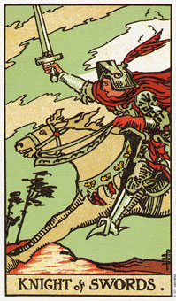

宝剑皇后暗示，经过深思熟虑所得到的成就。
皇后代表空气元素中水的部分：情绪和智力结合所带来的理解。她是理性的、思虑清晰及有耐性的。悬挂在她左手腕处的坠饰是在暗示，她必须利用她的剑(心智)来砍断束缚。她对生命的理解已经还给她自由了。
她身旁有许多云围绕着，不过她的头却位于云的上端，暗示她能够超越生命中情感的起伏不定。她的手向前方的生命召唤，而剑随时在握，以分析因应之道。皇后的这把剑笔直朝上，露出两段刀口，因为她知道人生的二元性。
她的思虑相当敏捷，是一个优秀的组织者，也是对人性相当机灵的审判者。她可能会是个完美主义者。她会给于美好而明智的忠告，这是根据她对自己痛苦经验的深刻记忆而来的。这是一个喜欢说话的女人，良好的对谈似乎会使她感到振奋。这可能是一张象征处女座的牌，特别是它和隐士一起出现的话;或者它也可能代表双子座、天秤座或水瓶座。
宝剑皇后所表示的这个人适合从事的事业有教学、管理、生意的经营者或顾问、咨商(比较接近一种知性的层面)、人事管理。她可能也会喜欢政治、医药、法律、科学研究、出版、编辑/校对，或任何要动脑的工作。
大体上的意义
宝剑皇后是一张思索感情的牌。它可能意味运用心智到情感中的行动，好让感觉有意义。作为某个问题的答案，宝剑皇后暗示透过清晰思考而获致成功。
现在正是你反省过去的行为或目前情况的时刻了。密切的观察那些接近你的事物，以确认你不会再重陷困境中。你可能会想从生活当中撤退，好好的思考你自己，以及未来的方向。
两性关系上的意义
以一个人而言，宝剑皇后是一个思考敏捷的女人，而且也是个对人性相当犀利的裁判，她喜欢和那种心思灵巧的人为伴。她经由交谈及观察对方的行为、习性来发现她的伴侣，谨慎地发展每一段关系。她有着很微妙的幽默感，不过如果你不仔细听的话，有可能会忽略掉。
宝剑皇后可能象征你对两性关系的戒慎态度。例如，在你投入之前，你会希望观察这个可能的伴侣一段时间。过去的困境已经教会你要小心投入、小心承诺。你并不怕孤单，也不见得会孤单。
倒立的宝剑皇后
当宝剑皇后出现倒立时，她可能会是一个悲观主义者、完美主义者和冷漠的人。她可以利用她的剑来挑起麻烦，并将她对人性犀利的判断和冷漠的好奇心结合在一起。她可以创造一触即发的情景，因为她喜欢看别人争斗。在那原本会成为朋友的人，在她巧妙的操纵下会反目成仇。
她自身痛苦的经验已经严重地伤害到她，所以她会一方面以一种开放的姿态来召唤人生，另一方面却在它向她靠近时，以她的剑将它击倒。
她可能会不诚实，你却很难使她面对这个事实，因为她总是为自己开了一扇小窗，随时准备夺窗而逃。她可能会是恶毒的、心胸狭窄的(她称偏狭的人生观为“纯洁的信念”)、尖酸可薄的。她会处心积虑的找出别人的弱点。，好对他们进行操纵或控制。
她经常对自身的能力抱持怀疑，而她也将使你对自己产生怀疑。她相当渴望接触人生、渴望成长，然而她却害怕冒险。对人生僵化的信念使她的情感常处于饥饿的状态。
当宝剑皇后出现倒立时，代表她极少善用自己的思考，而宁愿让自己停留在就习惯、伤害或负面想法当中。
在健康的分析方面，这张牌可能暗示胰脏方面的疾病，可能和血糖过少或糖尿病有关。有时候这个人一点亲切感也没有，有的只是尖酸刻薄，因为她相信生命从来没有善待过她，而她也无法在别人身上找到一丝丝的仁慈。
这张牌倒立的另外一种意义是，你有一种苛责自己的倾向，即使你只是犯了一个小小的错误。这可能是暗示你是一个完美主义者。果真如此的话，或许你应该记住：生活还包括了那些随时会把手给弄脏的事物。或许你还没有理解过去所发生的事情的意义，而且为那些你做过或没有去做的事情而惩罚自己。